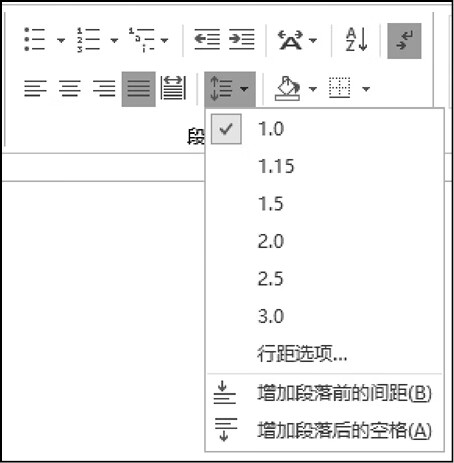
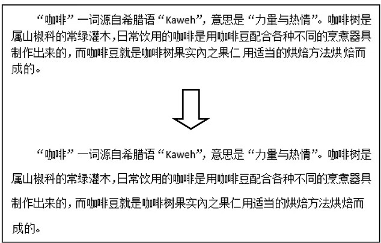
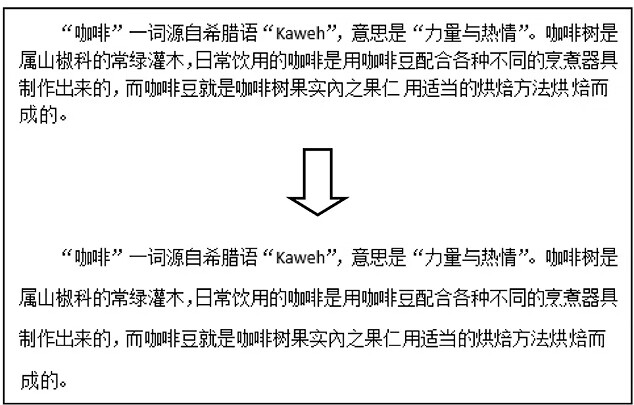
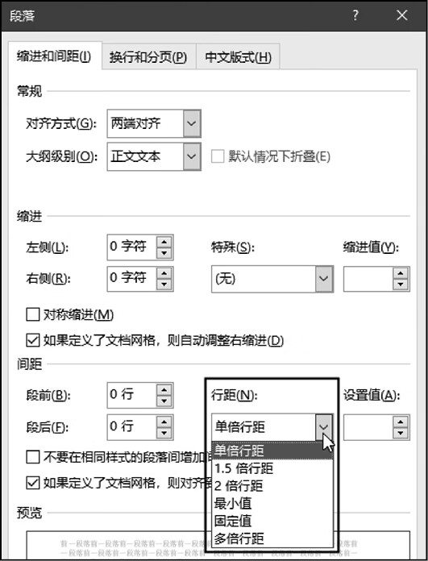

首页 > 编程笔记
Word设置行距（各行文字之间的距离）
行距表示段落中行与行之间的垂直距离，即一行的顶端到下一行顶端之间的距离。行距的值可以是行高的某个百分比，也可以是某个固定值。
设置行距的简单方法是，在功能区的【开始】选项卡中单击【行和段落间距】按钮，然后在弹出的菜单中选择行距的一个预设值，如图1所示，这些数值表示每行字体高度的倍数。
图2所示为将字体大小为五号的段落的行距设置为 1.5 倍前、后的效果。
行距由字体大小决定，改变字体大小时，行距会随之改变。
Word 中的字体大小以“磅”为单位，1 磅约等于 0.036 厘米（由 1÷28 计算得到）。一号字体的大小是 26 磅，约等于1厘米。假设段落中的文本的字号是五号，即 10.5 磅。
如果将行距设置为 1.5 倍行距，行与行之间的距离就是字体高度的 1.5 倍，即 10.5×1.5=15.75（磅），相当于在原字体大小的基础上增加了 0.5 倍。
如需为段落的行距设置某个特定的值，可以右击要设置行距的段落，在弹出的菜单中选择【段落】命令，打开【段落】对话框，在【缩进和间距】选项卡的【行距】下拉列表中进行设置，如图3所示。
对不同行距的说明：
设置行距的简单方法是，在功能区的【开始】选项卡中单击【行和段落间距】按钮，然后在弹出的菜单中选择行距的一个预设值，如图1所示，这些数值表示每行字体高度的倍数。
图2所示为将字体大小为五号的段落的行距设置为 1.5 倍前、后的效果。

图1：行距的预设值

图2：设置1.5倍行距前、后的效果
图1：行距的预设值

图2：设置1.5倍行距前、后的效果
行距由字体大小决定，改变字体大小时，行距会随之改变。
Word 中的字体大小以“磅”为单位，1 磅约等于 0.036 厘米（由 1÷28 计算得到）。一号字体的大小是 26 磅，约等于1厘米。假设段落中的文本的字号是五号，即 10.5 磅。
如果将行距设置为 1.5 倍行距，行与行之间的距离就是字体高度的 1.5 倍，即 10.5×1.5=15.75（磅），相当于在原字体大小的基础上增加了 0.5 倍。
如需为段落的行距设置某个特定的值，可以右击要设置行距的段落，在弹出的菜单中选择【段落】命令，打开【段落】对话框，在【缩进和间距】选项卡的【行距】下拉列表中进行设置，如图3所示。

图3：设置行距的值
图3：设置行距的值
对不同行距的说明：
- 单倍行距：等同于行距预设值中的 1.0。
- 1.5 倍行距：等同于行距预设值中的 1.5。
- 2 倍行距：等同于行距预设值中的 2.0。
- 最小值：选择该选项后，在【设置值】文本框中将显示一个数值，该值为当前单倍行距的值，相当于当前段落中最大字体的大小。如果手动设置最小值，只有当最小值大于单倍行距时，才使用设置的最小值作为行距值。
- 固定值：为行距设置一个固定不变的值，如果该值小于段落中的字体大小，段落中的部分或全部文字将无法完整显示。
- 多倍行距：等同于行距预设值中的 3.0。
关注公众号「站长严长生」，在手机上阅读所有教程，随时随地都能学习。内含一款搜索神器，免费下载全网书籍和视频。

微信扫码关注公众号